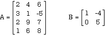

It was noted in section 5.3 that any type of data may be indexed by being placed in a Modula-2 array, including another array. Thus far, the only instance of doing the latter was in an array of strings.
TYPE String = ARRAY [0 .. 80] OF CHAR; Paragraph = ARRAY [1 .. 10] OF String; VAR para : Paragraph;
No mention was made at the time of how to refer to an individual character within the array para, but it seems reasonable to suppose that
ch := para [1] [2];
would be a legitimate assignment, and so it is. The type Paragraph can be thought of at one level of abstraction in the way it is defined, that is, as an array of strings. Looking a little more closely, one might also want to think of it as an array of array of characters. Likewise, if one desired, it would be quite proper to define
TYPE
DataBlock = ARRAY [1 .. 5] OF ARRAY [1 .. 4] OF INTEGER;
VAR
theData : DataBlock;
and to write assignments such as:
theData [2] [4] := -200;
to assign a value to a single item in one of the five arrays of four integers,
or
theData [2] := theData [4];
to assign one of the four-integer arrays to another in its entirety.
It is convenient to think of such data as if it were arranged in five rows each of four columns.
1 5 -6 9
2 0 4 -2
1 0 2 -6
-8 9 3 1
4 1 -3 5
In terminology previously used for several examples, the array consists of four column vectors, each of length 5. This closely parallels the mathematical construction known as a matrix. Here are some samples:

A two-dimensional matrix is a collection of data arranged in a rectangular fashion. An individual element is referenced by its row and its column as Ai, j and Bi, j . Both rows and columns are numbered starting from one If the maximum indices for the row and column are m and n, it is called an m by n matrix (written m x n.)
NOTE: This text will follow normal mathematical conventions and capitalize the first letter of a matrix identifier. This is not a rule; but a question of taste. The identifier of a two-dimensional array in a Modula-2 program will be capitalized only if it represents a matrix, and not otherwise.
By convention, the row index is always given first. In the above examples, A is a 4 x 3 matrix, and B is a 2 x 2 matrix. Likewise, A3,2 is the number 9, and A2,3 is the number -5. Sample declarations for A and B are given below.
TYPE
Matrix43 = ARRAY [1 .. 4], [1 .. 3] OF INTEGER;
Range = [1 .. 2];
Matrix22 = ARRAY Range, Range OF INTEGER;
VAR
A : Matrix43;
B : Matrix22;
Modula-2 requires separate brackets for each range, unlike some computing notations, which allow all the ranges to be listed inside a single pair of brackets. As with the one-dimensional or ordinary array, no brackets are needed if the name of a range type is given in place of a literal range.
When referring to the individual two-dimensional array elements in a Modula-2 program, both index references may be placed inside a single pair of brackets. Thus, one might write:
A [1, 3] := 5; B [2, 2] := A [3, 1];
rather than
A [1] [3] := 5; B [2] [2] := A [3] [1];
reflecting the fact that the data being abstracted is a single two-dimensional array with a unified indexing scheme, rather than an array of arrays, as the one with which this discussion began.
NOTE: Modula-2 does not actually distinguish between:
ARRAY range1, range2 OF type and ARRAY range1 OF ARRAY range2 OF type.
One or the other may be a better description of the actual structure of the data being abstracted, though the former is more compact and is easier to write. However, it makes no difference to the compiler or to the eventual program which of the two one uses, for the interpretation of both declarations produces exactly the same code.
Having constructed such a data type and assuming rowCount and colCount to be of type CARDINAL and to have values in the correct range, loops can be constructed with references to individual elements in the form:
int := B [rowCount, colCount]
or
int := A [rowCount, colCount]
Also, notice that the assignment
A [1, 4] := B [2, 1]
is perfectly legal, because both individual elements are of the same type, whereas the assignment
B := A;
is illegal because the arrays themselves are not of the same type, and the assignment
B [1, 3] := A [1, 3];
is also illegal because the indexing of B in this statement exceeds the correct bounds for the type. The first of these two errors is detected by the compiler, whereas the latter is normally found at run time when array index values are checked against the maximum and minimum allowable bounds. If it were done literally this way with 1 and 3, the compiler would catch the error. Normally, variables are used, however, and their values are not known until run time.
It is also possible to have arrays of matrices, that is, three dimensional arrays. These are harder to write down on paper, and four, five, or six dimensional ones are even more difficult to visualize. A six dimensional array of integers that is, say, three by three by three by three by three by three would have 729 elements. If each dimension were five instead of three, 15625 storage locations would be required for a single one of these entities. It is possible that insufficient room will be available for such variables in some machines. The compiler would allow the program to be compiled with such a dragon in it, but it might not be able to execute.
If the programmer has a sufficiently large memory store, it may not be necessary to be concerned about the size and number of large arrays. Some language implementations have extensive library facilities for array manipulation, and simply assume that the large quantities of memory sometimes necessary will in fact be available. However, there is always some limit on these things; one cannot consume memory space indefinitely.
Here's one (slightly unusual) way to declare that three by three by etc., along with one reference to it that does not use the same abstraction as the declaration, but is still correct:
TYPE
Range = [0 ..2];
MatrixA = ARRAY Range, Range OF INTEGER;
BigStructure = ARRAY Range, Range, Range OF MatrixA;
VAR
theArray : BigStructure;
BEGIN
theArray [1, 1, 2, 0, 1, 2] := -4
It was earlier noted that one can write more generic code using open array parameters that can accept a one-dimensional array of any length as an actual parameter. Likewise, a multidimensional actual array can be assigned to a multidimensional open array formal parameter provided the number of dimensions matches.
To use, say, a three-dimensional open array we need only write something like:
PROCEDURE MatrixOperation (VAR m1, m2 : ARRAY OF ARRAY OF ARRAY OF INTEGER);
Within the procedure, HIGH (m1) will return the highest index assigned on the first dimension. To find the highest index on one of the other dimensions, we observe that all the m1[i] are themselves open arrays, so that HIGH (m1[0]) in particular will return the highest index assigned on the second dimension. Likewise, HIGH (m1 [0, 0]) will return the highest index assigned on the third dimension.
To illustrate further, suppose one has
TYPE
DayRange = (Mon, Tue, Wed);
LetIndices = ['A' .. 'D'];
OddMatrix = ARRAY DayRange, LetIndices, [1 .. 5] OF INTEGER;
VAR
day : DayRange;
let : LetIndices;
num: CARDINAL;
odd1, odd2 : OddMatrix;
and the PROCEDURE MatrixOperation described above was invoked by
MatrixOperation (odd1, odd2);
then, within the procedure the following are
num := HIGH (m1); would assign num the value 2 num := HIGH (m1 [0]); would assign num the value 3 and, num := HIGH (m1 [0, 0]); would assign num the value 4
day := HIGH (m1); let := HIGH (m1 [Mon]);
NOTES: 1. This also illustrates that the indexing inside the procedure on the formal open array parameter always starts at the zeroth position, regardless of the indexing on the actual parameter type. (1 .. 5 is mapped to 0 .. 4 )
2. Older or non-standard versions of Modula-2 may not have multidimensional arrays.
3. One could use other than the zeroth element, so HIGH (odd1, [2, 3]) would also do, but in most cases, the zeroth element will be the array of choice upon which to operate with HIGH.